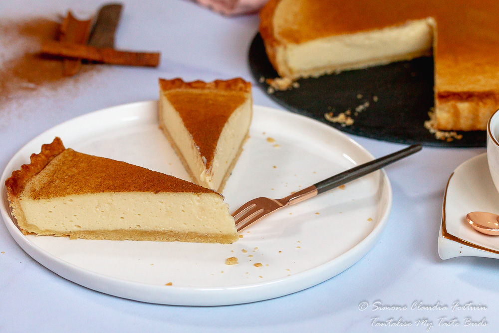

Melktert

Description
This is is one of the most, traditional desserts in South Africa. The actual meaning of the dish is a milk tart. The mean structure of the dessert is made with lots of milk,
flour, and eggs, which gives it a smooth creamy texture that melts in your mouth. To celebrate the dish there is also National Milk Tart Day. So you love milk and tart order
this without even looking at the menu. This will be served with a touch of cinnamon on the top to compliment a flavor.
Ingredients
Shortcrust Pastry
- 125 grams cold butter approximately 1 stick or 1/2 cup
- 36 grams fine granulated sugar approximately 45 ml or 3 tablespoons
- 225 grams cake flour approximately 400 ml or 1 2/3 cups
- 1 egg large
- 30 ml cold water approximately 2 tablespoons
Milk Tart filling
- 65 grams butter approximately 1/2 stick or 1/4 cup
- 25 grams cake flour approximately 45 ml or 3 tablespoons
- 198 grams sweetened full cream condensed milk approximately 1/2 large tin
- 500 ml milk approximately 2 cups
- 3 large eggs, separated
- 1.25 ml salt approximately 1/4 teaspoon
- 5 ml vanilla extract approximately 1 teaspoon
- 2.5 ml cinnamon powder approximately 1/2 to 1 teaspoon for dusting before serving